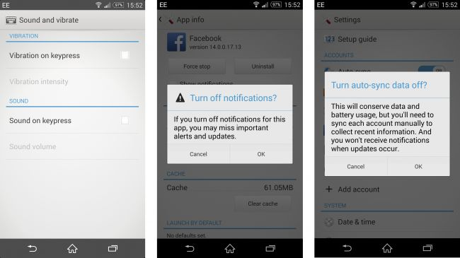

Batteries are growing bigger with every passing year, but we're not seeing a huge benefit because our Android devices are demanding more and more out of them. Battery life still tops the complaint charts for smartphone owners tired of the daily charging routine.
Most Android device manufacturers have added some form of power-saving mode. You can automatically hobble your phone's features or shut down specific apps when your battery dwindles below a predetermined level.
1. Use power saving mode
The first Android smartphone, the HTC Dream, had a 1,150mAh battery, but it also had a 3.2-inch display. The Samsung Galaxy S5 has a 2,800mAh battery and a 5.1-inch display. Average battery capacities have been climbing steadily since 2008, but screen sizes have been keeping pace.
2. Hibernate or freeze apps
You may also consider installing Greenify to get a good look at what is running and automatically hibernate apps that you aren't using, so they aren't eating system resources unless you start them up.
You'll need to root your device to really take full advantage, which is simple enough but will take a little time to manage if you're new to the process. If you do decide to root then you may also consider Titanium Backup Pro for freezing unwanted apps.
3. Streamline your home screen
The busier your home screen, the more battery life it's going to suck. Get rid of widgets that you don't need, and consider reducing refresh rates. Animation costs power, so ditch the live wallpapers.
If you have a phone with an AMOLED display (such as nearly all of the high end Samsungs or the new Moto X), then use a dark background for the home screen and a dark theme in general. The technology achieves deep blacks by not lighting up those pixels and so dark backgrounds can save you some power.
You'll need to root your device to really take full advantage, which is simple enough but will take a little time to manage if you're new to the process. If you do decide to root then you may also consider Titanium Backup Pro for freezing unwanted apps.
4. Turn off notifications
Do you need to know every time someone likes a post or comments on something you've engaged with on Facebook? Do you want to hear about the latest special offer or new app in your notification shade?
When you install any app, it automatically gains the right to fire notifications at you, but you can stop it in Settings > Apps by tapping on the app and clearing the 'Show notifications' box.
5. Reduce or stop auto-syncing
Do you need to check for emails every five minutes? Reduce the frequency of your syncing and use push settings for email wherever possible.

5 Android battery life tips and tricks